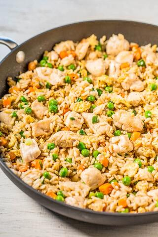

Easiest Chinese Fried Rice Recipe

Time to change that with this easy, one-skillet recipe that's ready in 20 minutes and better than takeout.
You'll never be tempted again to eat rice from a flimsy white takeout container after trying homemade. The
chicken is moist and juicy and there are green onions, garlic, sesame oil, and soy sauce for layers of flavor.
My favorites are the bits of scrambled eggs. Fried rice just isn't fried rice without those coveted bits of
eggs that I go searching for and devour those little treasures first. It's such an easy and healthy weeknight
dinner you can whip up in no time and the leftovers are great for lunches!
For this Chinese Chicken Fried Rice Recipe, you'll need:
- Oil (Both Sesame and Vegetable)
- Chicken Breasts
- Frozen peas and carrots
- Green Onions
- Garlic
- Eggs
- Cooked Rice
- Low-Sodium Soy Sauce
How to make Fried Rice:
- To make this chicken fried rice recipe, you'll first add the oils and diced chicken to a large skillet.
Cook the chicken over medium-high heat for about 5 minutes, or until no longer pink inside. Remove the chicken
to a plate while you stir-fry the veggies.
- To the same skillet, add the peas, carrots, and green onions. Once softened, add the garlic.
- Push the veggies to one side of the skillet, and scramble the eggs on the other side. Add the chicken back to
the pan, followed by the rice. Drizzle everything with soy sauce and cook until everything is heated through.